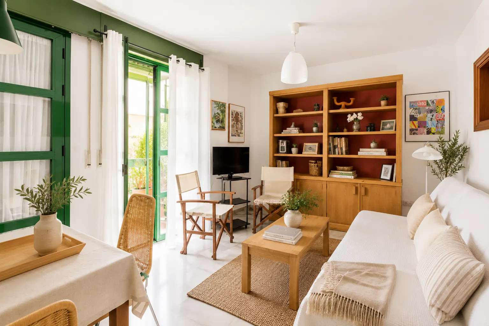
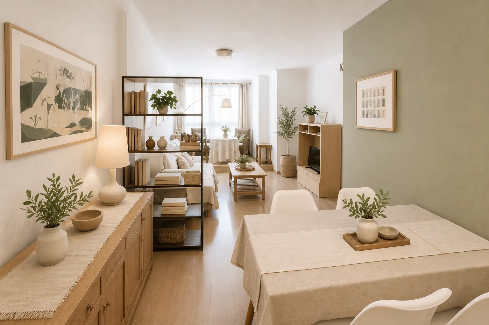

Málaga · Andalucía
Activos turísticos
con carácter.
Una selección personal de activos turísticos y oportunidades de inversión inmobiliaria en las direcciones más deseadas de Málaga.
Descubrir la selección↓Activos disponibles
Elija un activo para descubrirlo.
Cada activo cuenta con su propio dossier digital, galería y documentación para un primer análisis a su ritmo.
Activo turístico
Panaderos 10
Activo turístico dual
Fernando Camino 15
Los Naranjos de Marbella
Inversión inmobiliaria en Marbella
Conozca la urbanización y los criterios para valorar una oportunidad inmobiliaria en Nueva Andalucía.
Descubrir inversión en MarbellaLos Naranjos de Marbella
Real estate investment in Marbella
Explore the development and the key considerations when assessing a property opportunity in Nueva Andalucía.
Explore investment in MarbellaDe septiembre a junio
Alquiler de temporada en Los Naranjos de Marbella
Apartamento amueblado con terraza y piscina comunitaria, para estancias de tres meses o más.
Ver apartamento y condicionesSeptember to June
Seasonal rental in Los Naranjos de Marbella
A furnished apartment with a private terrace and communal pool, for stays of three months or longer.
View apartment and rental termsJaime Sureda
El lugar correcto merece una presentación a su altura.
Una aproximación personal a la compraventa inmobiliaria: menos propiedades, mejor seleccionadas y presentadas con la atención que exige cada dirección.
Información clara, visitas privadas y acompañamiento directo para compradores y propietarios en Málaga.
Hablar con Jaime→Contacto directo
¿Hablamos de la próxima propiedad?
Al contactar, sus datos se usarán para atender la consulta. Más información sobre privacidad.
When you contact us, your data is used to answer your enquiry. Read the privacy information.